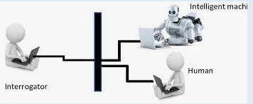

The "standard interpretation" of the Turing test, in which player C, the interrogator, is given the task of trying to determine which player – A or B – is a computer and which is a human.
The interrogator is limited to using the responses to written questions to make the determination.
The Turing test, originally called the imitation game by Alan Turing in 1949, is a test of a machine's ability to exhibit intelligent behaviour equivalent to that of a human.
In the test, a human evaluator judges a text transcript of a natural-language conversation between a human and a machine. The evaluator tries to identify the machine, and the machine passes if the evaluator cannot reliably tell them apart. The results would not depend on the machine's ability to answer questions correctly, only on how closely its answers resembled those of a human.
Since the Turing test is a test of indistinguishability in performance capacity, the verbal version generalizes naturally to all of human performance capacity, verbal as well as nonverbal.